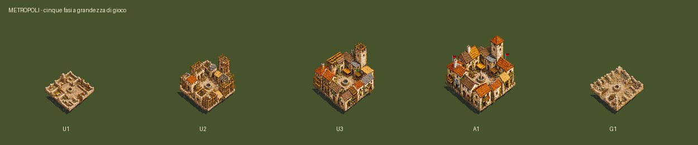
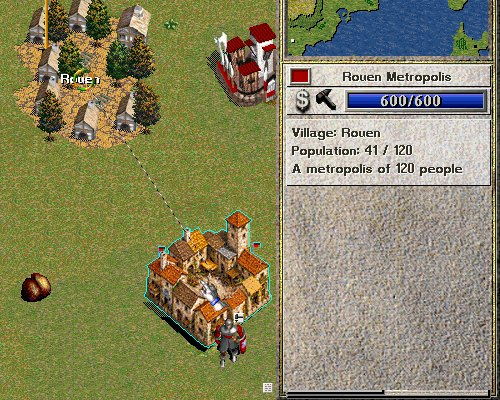
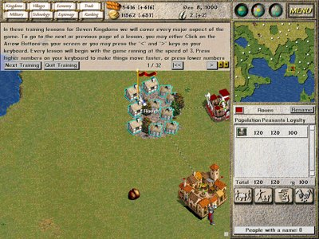
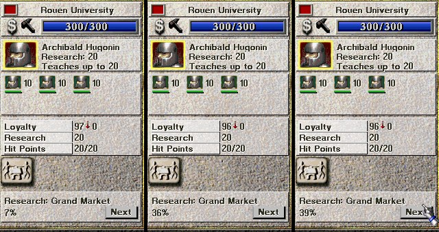

Novità di Seven Kingdoms
in corsoA che punto sono · aggiornato 24/10 ore 11:40
Sto facendo: Metropoli come «grande villaggio»: la struttura con la fontana attaccata al villaggio, +140 abitanti, quartieri di casette che compaiono da soli mentre il villaggio cresce.
Poi, in quest'ordine:
- Risorse nuove (pietra, legno, sale) e edifici: Fonderia, Vasellame, Falegnameria accanto alle foreste, Saline in riva all'acqua; tutto vendibile al mercato.
- Sanniti giocabili.
- Casa stregata (Fryhtan addestrabili).
- Popoli facoltativi: Etruschi, Mongoli, Iberi, Babilonesi, Cartaginesi.
- Raccolta finale dei file dei giochi.
Diario di oggi:
- 11:35 — Camminate di Romani e Celti con lo scambio di gamba in tutte le direzioni (pubblicato).
Già nel gioco
nuovoRomani e Celti
Due popoli nuovi, con la grafica di Codex: case, figure, ritratti, Seat of Power e nomi storici. Si scelgono nella schermata di nuova partita; compaiono anche come regni del computer e città indipendenti. Dei: Jupiter per i Romani, Cernunnos per i Celti (per ora combattono come il drago normanno, i poteri propri sono da decidere).


nuovoUniversità e Mulino
Università: funziona come il fortino. Il professore è chi ha la Ricerca più alta, gli altri entrano come studenti e imparano fino al suo livello; chi esce è uno «Scientist». Mulino: i villaggi collegati crescono del 50% più in fretta.


nuovoMenu di costruzione in due pagine
Con più di 11 edifici il menu non entrava più: ora la prima pagina ha 10 edifici, «More» e «Annulla», la seconda il resto e «Back».

nuovoMetropoli
Edificio nuovo di 4×4 caselle, un quartiere fitto con torre civica e piazzetta (grafica di Codex). Si costruisce accanto a un tuo villaggio e ne è la seconda metà: il villaggio collegato può arrivare a 120 abitanti invece di 60. Se ci sono più villaggi collegati, serve il più vicino.






nuovoFarming: il Mulino con i contadini
Abilità nuova «Farming». Il Mulino prende fino a 8 contadini dai villaggi collegati, come una fabbrica; lavorando migliorano. La crescita in più dei villaggi dipende da quanto sono bravi: all'inizio circa +5%, con contadini esperti fino a +50%. Nelle partite salvate prima il Mulino resta com'era (senza lavoratori, +50%).

nuovoRicerca all'Università
In fondo al pannello dell'Università: l'edificio che si sta ricercando (Grand Market o Mill), la percentuale e il pulsante «Next» per cambiare. Lavorano tutte le Università del regno che hanno un professore. Per ora i due edifici restano costruibili anche prima della ricerca.


correttoPulsanti dei nuovi edifici
Rifatti come quelli originali: sfondo di pietra, l'edificio vero del gioco e il nome in corsivo (Grand Market, University, Mill, Seat of Power).

correttoCamminate di Romani e Celti
Tre difetti sistemati.
- Lo scambio di gamba (segnalato da Simone): prima la stessa gamba restava sempre avanti. Codex ha rifatto le pose partendo da quelle approvate; ora il passo è sinistra avanti, gambe al centro, destra avanti, gambe al centro. Verso nord, dove le gambe si vedono da dietro, la posa con la destra avanti è quella approvata con la sola colonna delle gambe specchiata.
- La direzione: camminando verso sinistra la figura guardava a destra. Ora, come per i popoli originali, le direzioni verso ovest sono lo specchio di quelle verso est.
- Altezza e piedi: da un passo all'altro la figura cambiava altezza; ora resta uguale e i piedi stanno sulla stessa linea.


nuovoSalvataggi
I salvataggi delle versioni precedenti si caricano ancora tutti, compresi quelli con il Grande Mercato e l'Università. Corretta anche l'animazione di crollo del Grande Mercato.
Grafica pronta di Codex, non ancora nel gioco
Sei popoli completi (case, figure, ritratti, Seat of Power e dio), da approvare prima di metterli nel gioco.
Sanniti · dio Mamerte · Santuario di Pietrabbondante


Etruschi · dio Tinia · Tempio di Tinia


Mongoli · dio Tengri · Ordu del Gran Khan


Iberi · dio Neton · Santuario iberico del Sole


Babilonesi · dio Marduk · Etemenanki


Cartaginesi · dio Baal Hammon · Tempio di Eshmun